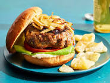

Hamburger recipe
A hamburger is a classic and satisfying dish made from a ground beef patty that's grilled or pan-seared and served inside a soft, toasted bun. The juicy beef patty is often seasoned with salt, pepper, and other spices, and can be cooked to your preferred doneness—ranging from rare to well-done. A traditional hamburger is typically topped with crisp lettuce, fresh tomatoes, onions, pickles, and a slice of cheese for extra flavor. Popular condiments include ketchup, mustard, mayo, and sometimes special sauces for a personalized touch. You can also customize your hamburger with a variety of toppings like bacon, avocado, sautéed mushrooms, or even fried eggs for a gourmet twist. Whether you're making it simple or stacking it with ingredients, a hamburger offers
endless possibilities for flavor and is a perfect meal for any occasion!
Ingredients
- Ground beef (typically 80% lean, 20% fat for juiciness)
- Burger buns (soft, toasted)
- Salt and pepper (for seasoning the beef)
- Cheese (optional, such as cheddar or American cheese)
- Lettuce (crisp leaves, like iceberg or romaine)
- Tomato (sliced)
- Onion (sliced, red or white)
- Pickles (optional, dill pickles are common)
- Ketchup and mustard (classic condiments)
- Mayonnaise (optional, for added creaminess)
Steps
- 1. Prepare the Ingredients:
Slice the tomato, onion, and pickles.
Rinse and pat dry the lettuce.
Optionally, toast the burger buns for added texture.
- 2. Form the Burger Patties:
Take the ground beef and divide it into equal portions (usually about ¼ to ⅓ pound per patty).
Gently shape the beef into patties about ¾ inch thick, making a small indentation in the center of each patty with your thumb to prevent it from puffing up while cooking.
Season both sides of the patties with salt and pepper.
- 3. Cook the Patties:
Grill or Pan-Sear: Heat a grill or pan to medium-high heat. Add a little oil if using a pan.
Cook the patties for about 3-5 minutes on each side, depending on your preferred doneness (e.g., 3 minutes for medium-rare, 5 minutes for well-done).
If you’re adding cheese, place a slice on top of each patty during the last minute of cooking and cover to melt.
- 4. Assemble the Burger:
Spread condiments like ketchup, mustard, and mayonnaise on the inside of the toasted buns.
Place the cooked patty on the bottom bun.
Add toppings like lettuce, tomato slices, onions, and pickles.
Place the top bun on the burger.
- 5. Serve:
Serve the burger immediately, with sides like fries or a salad, and enjoy your freshly made hamburger!